# import required packages for this chapter
from pathlib import Path
import warnings
import pandas as pd
import numpy as np
import statsmodels.formula.api as sm
from statsmodels.tsa import tsatools
from statsmodels.tsa.arima_model import ARIMA
from statsmodels.graphics import tsaplots
from dmba import regressionSummary
import matplotlib.pylab as plt
%matplotlib inlineChapter 17: Regression-Based Forecasting
- 2019-2020 Galit Shmueli, Peter C. Bruce, Peter Gedeck
Data Mining for Business Analytics: Concepts, Techniques, and Applications in Python (First Edition) Galit Shmueli, Peter C. Bruce, Peter Gedeck, and Nitin R. Patel. 2019.
Date: 2020-03-08
Python Version: 3.8.2 Jupyter Notebook Version: 5.6.1
Packages: - dmba: 0.0.12 - matplotlib: 3.2.0 - numpy: 1.18.1 - pandas: 1.0.1 - statsmodels: 0.11.1
The assistance from Mr. Kuber Deokar and Ms. Anuja Kulkarni in preparing these solutions is gratefully acknowledged.
# Working directory:
#
# We assume that data are kept in the same directory as the notebook. If you keep your
# data in a different folder, replace the argument of the `Path`
DATA = Path('.')
# and then load data using
#
# pd.read_csv(DATA / ‘filename.csv’)Problem 17.1: Impact of September 11 on Air Travel in the United States
The Research and Innovative Technology Administration’s Bureau of Transportation Statistics conducted a study to evaluate the impact of the September 11, 2001 terrorist attack on US transportation. The 2006 study report and the data can be found at https://www.bts.gov/archive/publications/estimated_impacts_of_9_11_on_us_travel/index. The goal of the study was stated as follows:
The purpose of this study is to provide a greater understanding of the passenger travel behavior patterns of persons making long distance trips before and after 9/11.
The report analyzes monthly passenger movement data between January 1990 and May 2004. Data on three monthly time series are given in file Sept11Travel.csv for this period:
- Actual airline revenue passenger miles (Air),
- Rail passenger miles (Rail), and
- Vehicle miles traveled (Car).
In order to assess the impact of September 11, BTS took the following approach: using data before September 11, they forecasted future data (under the assumption of no terrorist attack). Then, they compared the forecasted series with the actual data to assess the impact of the event. Our first step, therefore, is to split each of the time series into two parts: pre- and post September 11. We now concentrate only on the earlier time series.
Solution 17.1.a
Plot the pre-event AIR time series. What time series components appear?
df = pd.read_csv(DATA / 'Sept11Travel.csv')
# convert the date information to a datetime object
df['Date'] = pd.to_datetime(df.Month, format='%b-%y')
air_ts = pd.Series(df['Air RPM (000s)'].values, index=df.Date, name='Air')
pre_air_ts = air_ts[:'2001-08-31']
post_air_ts = air_ts['2001-08-31':]
rail_ts = pd.Series(df['Rail PM'].values, index=df.Date, name='Rail')
pre_rail_ts = rail_ts[:'2001-08-31']
post_rail_ts = rail_ts['2001-08-31':]
car_ts = pd.Series(df['VMT (billions)'].values, index=df.Date, name='Car')
pre_car_ts = car_ts[:'2001-08-31']
post_car_ts = car_ts['2001-08-31':]
ax = pre_air_ts.plot()
ax.set_yscale('log')
plt.show()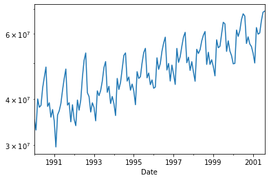
From the time plot we can say that the following components appear in the given time series:
Level, trend, seasonality and noise.
Solution 17.1.b
The Figure in the book shows a time plot of the seasonally adjusted pre-September-11 AIR series. Which of the following methods would be adequate for forecasting the series shown in the figure?
Linear regression model seasonality
Linear regression model with trend
Linear regression model with trend and seasonality
Linear regression model seasonality - NO
Linear regression model with trend - YES
Linear regression model with trend and seasonality - NO
Solution 17.1.c
Specify a linear regression model for the AIR series that would produce a seasonally adjusted series similar to the Figure shown in the book, with multiplicative seasonality. What is the outcome variable? What are the predictors?
- Outcome variable = log Y
- Predictor = 11 dummies, for 11 of the 12 months (one reference category)
Solution 17.1.d
Run the regression model from (c). Remember to use only pre-event data.
pre_air_df = tsatools.add_trend(pre_air_ts, trend='ct')
pre_air_df['Month'] = pre_air_df.index.month
lm_ts = sm.ols(formula='np.log(Air) ~ C(Month)', data=pre_air_df).fit()
lm_ts.summary()| Dep. Variable: | np.log(Air) | R-squared: | 0.322 |
| Model: | OLS | Adj. R-squared: | 0.263 |
| Method: | Least Squares | F-statistic: | 5.515 |
| Date: | Sun, 08 Mar 2020 | Prob (F-statistic): | 3.60e-07 |
| Time: | 20:21:12 | Log-Likelihood: | 68.335 |
| No. Observations: | 140 | AIC: | -112.7 |
| Df Residuals: | 128 | BIC: | -77.37 |
| Df Model: | 11 | ||
| Covariance Type: | nonrobust |
| coef | std err | t | P>|t| | [0.025 | 0.975] | |
| Intercept | 17.5598 | 0.045 | 391.626 | 0.000 | 17.471 | 17.649 |
| C(Month)[T.2] | -0.0616 | 0.063 | -0.971 | 0.333 | -0.187 | 0.064 |
| C(Month)[T.3] | 0.1410 | 0.063 | 2.224 | 0.028 | 0.016 | 0.267 |
| C(Month)[T.4] | 0.0955 | 0.063 | 1.507 | 0.134 | -0.030 | 0.221 |
| C(Month)[T.5] | 0.1250 | 0.063 | 1.971 | 0.051 | -0.001 | 0.250 |
| C(Month)[T.6] | 0.2064 | 0.063 | 3.254 | 0.001 | 0.081 | 0.332 |
| C(Month)[T.7] | 0.2717 | 0.063 | 4.285 | 0.000 | 0.146 | 0.397 |
| C(Month)[T.8] | 0.2983 | 0.063 | 4.704 | 0.000 | 0.173 | 0.424 |
| C(Month)[T.9] | 0.0803 | 0.065 | 1.239 | 0.218 | -0.048 | 0.209 |
| C(Month)[T.10] | 0.1137 | 0.065 | 1.753 | 0.082 | -0.015 | 0.242 |
| C(Month)[T.11] | 0.0280 | 0.065 | 0.432 | 0.666 | -0.100 | 0.156 |
| C(Month)[T.12] | 0.0699 | 0.065 | 1.078 | 0.283 | -0.058 | 0.198 |
| Omnibus: | 59.298 | Durbin-Watson: | 0.032 |
| Prob(Omnibus): | 0.000 | Jarque-Bera (JB): | 8.596 |
| Skew: | 0.010 | Prob(JB): | 0.0136 |
| Kurtosis: | 1.786 | Cond. No. | 12.8 |
Warnings:
[1] Standard Errors assume that the covariance matrix of the errors is correctly specified.
check the Estimate for Season2 (Feb), -0.600 means Feb numbers (on an average) are less than Jan and positive estimates for all other seasons means they are more than Jan.
Solution 17.1.d.i
What can we learn from the statistical insignificance of the coefficients for October and September?
We learn that the apparently positive seasonal effect for Sep. (P-value=0.218) is not statistically significant. However, it is statistically significant for October (P-value=0.082).
Solution 17.1.d.ii
The actual value of AIR (air revenue passenger miles) in January 1990 was 35.153577 billion. What is the residual for this month, using the regression model? Report the residual in terms of air revenue passenger miles.
# Note that the model predicts the logarithm of the outcome, we need to `exp` it
predicted = np.exp(lm_ts.predict(pre_air_df))[0]
actual = pre_air_ts[0]
print('Predicted for Jan 1990 :', predicted)
print('Actual value for Jan 1990:', actual)
residual = actual - predicted
print('Residual for Jan 1990 :', residual)Predicted for Jan 1990 : 42278658.58950092
Actual value for Jan 1990: 35153577
Residual for Jan 1990 : -7125081.589500919Solution 17.1.e
Create an ACF (autocorrelation) plot of the regression residuals.
fig = tsaplots.plot_acf(lm_ts.resid)
fig.axes[0].set_xlim(0, 12)
plt.show()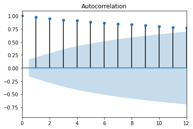
Solution 17.1.e.i
What does the ACF plot tell us about the regression model’s forecasts?
The positive autocorrelation at many lags tells us that the forecast errors from this model are positively correlated. If we over-predict in a certain month, we are likely to over-predict the following month as well.
Solution 17.1.e.ii
How can this information be used to improve the model?
By creating a second-level where we model the residuals using an AR model. (Alternatively, by incorporating lagged periods as predictors, within an ARIMA model).
Solution 17.1.f
Fit linear regression models to Air, Rail, and to Car with additive seasonality and an appropriate trend. For Air and Car, fit a linear trend. For Rail, use a quadratic trend. Remember to use only pre-event data. Once the models are estimated, use them to forecast each of the three post-event series.
air_df = tsatools.add_trend(air_ts, trend='ct')
air_df['Month'] = air_df.index.month
rail_df = tsatools.add_trend(rail_ts, trend='ct')
rail_df['Month'] = rail_df.index.month
car_df = tsatools.add_trend(car_ts, trend='ct')
car_df['Month'] = car_df.index.month
air_lm = sm.ols(formula='Air ~ trend + C(Month)', data=air_df[:'2001-01-01']).fit()
rail_lm = sm.ols(formula='Rail ~ trend + np.square(trend) + C(Month)', data=rail_df[:'2001-01-01']).fit()
car_lm = sm.ols(formula='Car ~ trend + C(Month)', data=car_df[:'2001-01-01']).fit()Solution 17.1.f.i
For each series (Air, Rail, Auto), plot the complete pre-event and post-event actual series overlayed with the predicted series.
with warnings.catch_warnings():
warnings.simplefilter("ignore")
fig, axes = plt.subplots(nrows=3, ncols=1, figsize=(10,9))
air_ts.plot(ax=axes[0])
air_lm.predict(air_df).plot(ax=axes[0])
rail_ts.plot(ax=axes[1])
rail_lm.predict(rail_df).plot(ax=axes[1])
car_ts.plot(ax=axes[2])
car_lm.predict(car_df).plot(ax=axes[2])
axes[0].axvline(x='2001-09-11')
axes[1].axvline(x='2001-09-11')
axes[2].axvline(x='2001-09-11')
plt.tight_layout()
plt.show()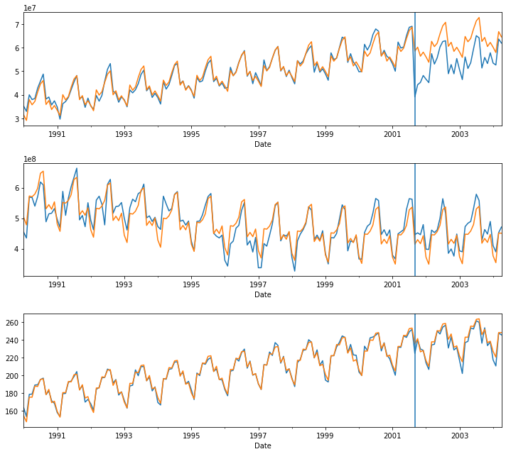
Solution 17.1.f.ii
What can be said about the effect of the September 11 terrorist attack on the three modes of transportation? Discuss the magnitude of the effect, its time span, and any other relevant aspects.
For Rail and Auto, there is hardly any change. For Air, there is an immediate drop after Sept 11, 2001 of approximately 30%, a modest portion of which is recovered by spring of 2002.
Problem 17.2: Analysis of Canadian Manufacturing Workers Workhours
The time plot (see book) describes the average annual number of weekly hours spent by Canadian manufacturing workers (data are available in CanadianWorkHours.csv, data courtesy of Ken Black).
df = pd.read_csv(DATA / 'CanadianWorkHours.csv')
df_ts = pd.Series(df['Hours'].values, index=pd.to_datetime(df.Year, format='%Y'), name='shipments')
ax = df_ts.plot()
ax.set_ylabel('Hours per Week')
plt.show()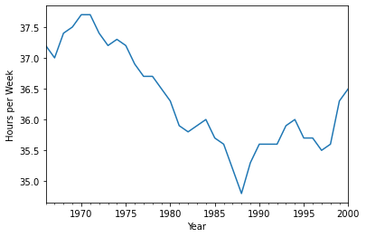
Solution 17.2.a
Which of the following regression models would fit the series best? (Choose one.)
- Linear trend model
- Linear trend model with seasonality
- Quadratic trend model
- Quadratic trend model with seasonality
Of the four options, the quadratic trend model would fit the series best.
Solution 17.2.b
If we computed the autocorrelation of this series, would the lag-1 autocorrelation exhibit negative, positive, or no autocorrelation? How can you see this from the plot?
Positive autocorrelation - each succeeding value in the series stays fairly close to the previous value.
Solution 17.2.c
Compute the autocorrelation of the series and produce an ACF plot. Verify your answer to the previous question.
tsaplots.plot_acf(df_ts)
plt.show()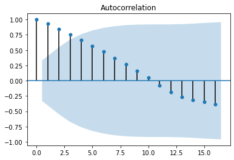
Problem 17.3: Toys “R” Us Revenues
The Figure is a time plot of the quarterly revenues of Toys “R” Us between 1992 and 1995 (thanks to Chris Albright for suggesting the use of these data, which are available in ToysRUsRevenues.csv).
df = pd.read_csv(DATA / 'ToysRUsRevenues.csv')
for q, m in ('Q1', '03'), ('Q2', '06'), ('Q3', '09'), ('Q4', '12'):
df['QuarterYear'] = df['QuarterYear'].str.replace(q, m)
df['Date'] = pd.to_datetime(df.QuarterYear, format='%m-%y')
df_ts = pd.Series(df['Revenue(in million $)'].values, index=df.Date, name='Revenue')ax = df_ts.plot()
ax.set_xlabel('Quarter')
ax.set_ylabel('Revenue(in million $)')
plt.show()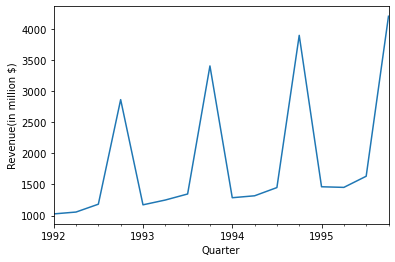
Solution 17.3.a
Fit a regression model with a linear trend and additive seasonality. Use the entire series (excluding the last two quarters) as the training set.
Solution 17.3.b
A partial output of the regression model is shown in this Table (where C(Quarter)[T.2] is the Quarter 2 dummy).
df = tsatools.add_trend(df_ts, trend='ct')
df['Quarter'] = df.index.quarter
train_df = df[:-2]
valid_df = df[-2:]
lm = sm.ols(formula='Revenue ~ trend + C(Quarter)', data=train_df).fit()
print(pd.DataFrame({'coef': lm.params, 'std err': lm.bse}))
# warning expected
print(lm.summary()) coef std err
Intercept 906.750000 115.346119
C(Quarter)[T.2] -15.107143 119.659603
C(Quarter)[T.3] 89.166667 128.673983
C(Quarter)[T.4] 2101.726190 129.165419
trend 47.107143 11.256629
OLS Regression Results
==============================================================================
Dep. Variable: Revenue R-squared: 0.977
Model: OLS Adj. R-squared: 0.967
Method: Least Squares F-statistic: 97.18
Date: Sun, 08 Mar 2020 Prob (F-statistic): 2.13e-07
Time: 20:21:13 Log-Likelihood: -88.547
No. Observations: 14 AIC: 187.1
Df Residuals: 9 BIC: 190.3
Df Model: 4
Covariance Type: nonrobust
===================================================================================
coef std err t P>|t| [0.025 0.975]
-----------------------------------------------------------------------------------
Intercept 906.7500 115.346 7.861 0.000 645.819 1167.681
C(Quarter)[T.2] -15.1071 119.660 -0.126 0.902 -285.796 255.582
C(Quarter)[T.3] 89.1667 128.674 0.693 0.506 -201.914 380.247
C(Quarter)[T.4] 2101.7262 129.165 16.272 0.000 1809.534 2393.919
trend 47.1071 11.257 4.185 0.002 21.643 72.571
==============================================================================
Omnibus: 5.015 Durbin-Watson: 2.269
Prob(Omnibus): 0.081 Jarque-Bera (JB): 2.414
Skew: -0.166 Prob(JB): 0.299
Kurtosis: 5.007 Cond. No. 36.0
==============================================================================
Warnings:
[1] Standard Errors assume that the covariance matrix of the errors is correctly specified./Users/gedeck/opt/anaconda3/envs/dmba-notebooks/lib/python3.8/site-packages/scipy/stats/stats.py:1534: UserWarning: kurtosistest only valid for n>=20 ... continuing anyway, n=14
warnings.warn("kurtosistest only valid for n>=20 ... continuing "regressionSummary(valid_df['Revenue'], lm.predict(valid_df))
Regression statistics
Mean Error (ME) : 183.1429
Root Mean Squared Error (RMSE) : 313.6820
Mean Absolute Error (MAE) : 254.6667
Mean Percentage Error (MPE) : 3.0194
Mean Absolute Percentage Error (MAPE) : 7.4047Use this output to answer the following questions:
Solution 17.3.b.i
Which two statistics (and their values) measure how well this model fits the training data?
The multiple R-squared (0.98) indicates what portion of the overall variation is explained by the regression, and the RMS Error (314) gives an idea of the magnitude of the typical error (regardless of direction).
Solution 17.3.b.ii
Which two statistics (and their values) measure the predictive accuracy of this model?
The RMS error (314) gives an idea of the magnitude of the typical error, and the Mean Error (183) an idea of the overall average error (with errors in one direction netting out errors in the other).
Solution 17.3.b.iii
After adjusting for trend, what is the average difference between sales in Q3 and sales in Q1?
q3q1_differences = (df_ts[2:].values - df_ts[:-2].values)[[0, 4, 8, 12]]
print('Differences: ', q3q1_differences)
print('mean difference: ', q3q1_differences.mean())Differences: [156 174 163 169]
mean difference: 165.5The actual Q3-Q1 differences are 156+174+163+169, the average is 165.5. \$94 million of this is actually trend (the coefficient for trend is \$47 million, so two quarter’s worth is \$94 million), leaving \$71 million as the average Q3-Q1 difference after adjusting for trend .
Solution 17.3.b.iv
After adjusting for seasonality, which quarter (\(Q_1, Q_2, Q_3\), or \(Q_4\)) has the highest average sales?
After adjusting for seasonality, you are left with trend, and the trend is for increasing sales. Therefore, Q4, the last quarter, will have the highest average sales.
Problem 17.4: Walmart Stock
The Figure shows the series of Walmart daily closing prices between February 2001 and February 2002 (Thanks to Chris Albright for suggesting the use of these data, which are publicly available, for example, at http://finance.yahoo.com and are in the file WalMartStock.csv).
df = pd.read_csv(DATA / 'WalMartStock.csv')
ts = pd.Series(df['Close'].values, index=pd.to_datetime(df.Date, format='%d-%b-%y'), name='Walmart')
ts.plot()
plt.show()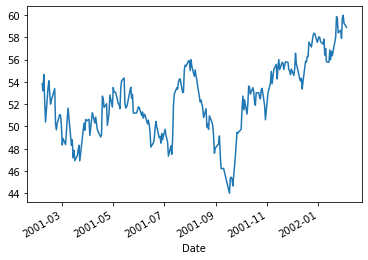
Solution 17.4.a
Fit an AR(1) model to the close price series. Report the coefficient table.
# warning expected
ARIMA(ts, order=(1, 0, 0)).fit(disp=0).summary()/Users/gedeck/opt/anaconda3/envs/dmba-notebooks/lib/python3.8/site-packages/statsmodels/tsa/base/tsa_model.py:216: ValueWarning: A date index has been provided, but it has no associated frequency information and so will be ignored when e.g. forecasting.
warnings.warn('A date index has been provided, but it has no'| Dep. Variable: | Walmart | No. Observations: | 248 |
| Model: | ARMA(1, 0) | Log Likelihood | -349.796 |
| Method: | css-mle | S.D. of innovations | 0.987 |
| Date: | Sun, 08 Mar 2020 | AIC | 705.593 |
| Time: | 20:21:13 | BIC | 716.133 |
| Sample: | 0 | HQIC | 709.836 |
| coef | std err | z | P>|z| | [0.025 | 0.975] | |
| const | 52.9511 | 1.328 | 39.863 | 0.000 | 50.348 | 55.555 |
| ar.L1.Walmart | 0.9558 | 0.019 | 51.090 | 0.000 | 0.919 | 0.993 |
| Real | Imaginary | Modulus | Frequency | |
| AR.1 | 1.0462 | +0.0000j | 1.0462 | 0.0000 |
Solution 17.4.b
Which of the following is/are relevant for testing whether this stock is a random walk?
The autocorrelations of the close prices series
The AR(1) slope coefficient
The AR(1) constant coefficient
The autocorrelations of the close prices series - NO
The AR(1) slope coefficient - YES
The AR(1) constant coefficient - NO
Solution 17.4.c
Does the AR model indicate that this is a random walk? Explain how you reached your conclusion.
tsaplots.plot_acf(ts, lags=10)
tsaplots.plot_acf(np.diff(ts), lags=10)
plt.show()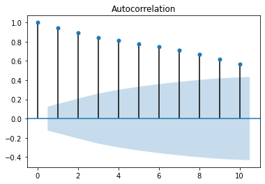
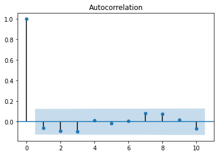
First, note that the ACF plot indicates no substantial autocorrelation for the differences. Fitting an AR(1) model to the close price series yields a slope coefficient of 0.956 with standard error 0.019. The slope coefficient is 2.3 standard errors away from the value 1. At a 5% significance level we’d say that this is not a random walk, but at 1% it is. In conclusion, the series appears to be close to a random walk.
Solution 17.4.d
What are the implications of finding that a time-series is a random walk? Choose the correct statement(s) below.
It is impossible to obtain forecasts that are more accurate than naive forecasts for the series
The series is random
The changes in the series from one period to the next are random
It is impossible to obtain forecasts that are more accurate than naive forecasts for the series - YES (except for the naive prediction that yesterday’s price is a good predictor of today’s)
The series is random - NO (there is an underlying value around which there is noise (errors))
The changes in the series from one period to the next are random - YES
Problem 17.5: Department Store Sales
The time plot in the Figure describes actual quarterly sales for a department store over a 6-year period (data are available in DepartmentStoreSales.csv, data courtesy of Chris Albright).
df = pd.read_csv(DATA / 'DepartmentStoreSales.csv')
df_ts = pd.Series(df['Sales'].values, index=df.Quarter, name='Sales')
ax = df_ts.plot(style='.-')
ax.set_ylabel('Sales')
plt.tight_layout()
plt.show()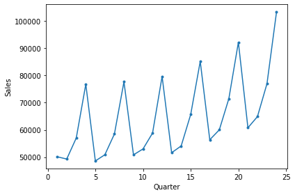
Solution 17.5.a
The forecaster decided that there is an exponential trend in the series. In order to fit a regression-based model that accounts for this trend, which of the following operations must be performed?
Take log of quarter index
Take log of sales
Take an exponent of sales
Take an exponent of quarter index
Take log of quarter index - NO
Take log of sales - YES
Take an exponent of sales - NO
Take an exponent of quarter index - NO
Solution 17.5.b
Fit a regression model with an exponential trend and seasonality, using the first 20 quarters as the training data (remember to first partition the series into training and validation series).
df = tsatools.add_trend(df_ts, trend='ct')
df['Quarter'] = [f'Q{(idx-1) % 4 + 1}' for idx in df.index]
train_df = df[:20]
valid_df = df[20:]
lm_expo = sm.ols(formula='np.log(Sales) ~ trend + Quarter', data=df[:20]).fit()Solution 17.5.c
A partial output is shown in the Table. From the output, after adjusting for trend, are Q2 average sales higher, lower, or approximately equal to the average Q1 sales?
print(lm_expo.summary()) OLS Regression Results
==============================================================================
Dep. Variable: np.log(Sales) R-squared: 0.979
Model: OLS Adj. R-squared: 0.974
Method: Least Squares F-statistic: 175.9
Date: Sun, 08 Mar 2020 Prob (F-statistic): 2.08e-12
Time: 20:21:14 Log-Likelihood: 42.865
No. Observations: 20 AIC: -75.73
Df Residuals: 15 BIC: -70.75
Df Model: 4
Covariance Type: nonrobust
=================================================================================
coef std err t P>|t| [0.025 0.975]
---------------------------------------------------------------------------------
Intercept 10.7489 0.019 574.057 0.000 10.709 10.789
Quarter[T.Q2] 0.0250 0.021 1.202 0.248 -0.019 0.069
Quarter[T.Q3] 0.1653 0.021 7.917 0.000 0.121 0.210
Quarter[T.Q4] 0.4337 0.021 20.572 0.000 0.389 0.479
trend 0.0111 0.001 8.561 0.000 0.008 0.014
==============================================================================
Omnibus: 0.809 Durbin-Watson: 0.728
Prob(Omnibus): 0.667 Jarque-Bera (JB): 0.424
Skew: 0.351 Prob(JB): 0.809
Kurtosis: 2.872 Cond. No. 52.6
==============================================================================
Warnings:
[1] Standard Errors assume that the covariance matrix of the errors is correctly specified.Coefficient of the Q_2 is 0.024, which is very low close to 0%. This implies that an average sale of Q2 is approximately equal to the average Q1 sales. Approximately equal (p-value is insignificant)
Solution 17.5.d
Use this model to forecast sales in quarters 21 and 22.
predict_lm_expo = np.exp(lm_expo.predict(train_df))
ax = train_df.plot(y='Sales')
predict_lm_expo.plot(ax=ax)
valid_df.plot(ax=ax, y='Sales', color='C0', linestyle='dashed')
np.exp(lm_expo.predict(valid_df)).plot(ax=ax, y='Sales', color='C1', linestyle='dashed')
plt.show()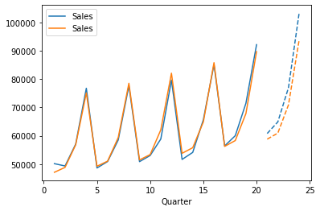
Predictions for quarters 21 and 22
np.exp(lm_expo.predict(valid_df))[:2]Quarter
21 58793.709570
22 60951.509541
dtype: float64regressionSummary(valid_df['Sales'][:2], np.exp(lm_expo.predict(valid_df))[:2])
Regression statistics
Mean Error (ME) : 2977.3904
Root Mean Squared Error (RMSE) : 3131.7550
Mean Absolute Error (MAE) : 2977.3904
Mean Percentage Error (MPE) : 4.6919
Mean Absolute Percentage Error (MAPE) : 4.6919Solution 17.5.e
The plots in the Figure describe the fit (top) and forecast errors (bottom) from this regression model.
Solution 17.5.e.i
Recreate these plots.
with warnings.catch_warnings():
warnings.simplefilter("ignore")
fig, axes = plt.subplots(nrows=2, ncols=1, figsize=(8,6))
np.exp(lm_expo.predict(df[:20])).plot(ax=axes[0], color='C1', style='.-')
resid = df[:20].Sales - np.exp(lm_expo.predict(df[:20]))
resid.plot(ax=axes[1], color='C1', style='.-')
df[:20].Sales.plot(ax=axes[0], color='C0', style='.-')
axes[0].set_ylabel('Sales')
axes[1].set_ylabel('Residuals')
plt.show()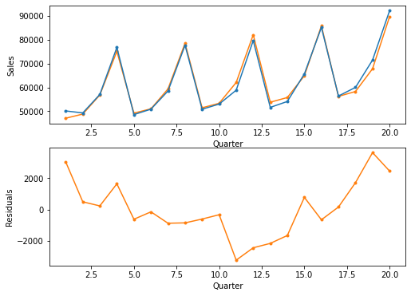
Solution 17.5.e.ii
Based on these plots, what can you say about your forecasts for quarters 21 and 22? Are they likely to over-forecast, under-forecast, or be reasonably close to the real sales values?
Based on the U-shape of the residual plot, at Q20, you would expect Q21 and Q22 estimates to be too low (actual - forecast > 0). If we look at the actual data (below), it turns out that the predictions were indeed too low, indicating that the fitted exponential trend is inadequate. From the above estimates for Q21 and Q22 we can see that the predicted forecast values for quarter 21 and 22 are below the actual values.
valid_df['Sales'][:2]Quarter
21 60800
22 64900
Name: Sales, dtype: int64Solution 17.5.f
From the forecast errors plot, which of the following statements appear true?
Seasonality is not captured well
The regression model fits the data well
The trend in the data is not captured well by the model
Seasonality is not captured well - NO
The regression model fits the data well - NO
The trend in the data is not captured well by the model - YES
Solution 17.5.g
Which of the following solutions is adequate and a parsimonious solution for improving model fit?
Fit a quadratic trend model to the residuals (with Quarter and Quarter\(^2\))
Fit an AR model to the residuals
Fit a quadratic trend model to Sales (with Quarter and Quarter\(^2\))
Fit a quadratic trend model to the residuals (with Quarter and Quarter\(^2\)) - NO
Fit an AR model to the residuals - NO
Fit a quadratic trend model to Sales (with Quarter and Quarter\(^2\)) - YES
with warnings.catch_warnings():
warnings.simplefilter("ignore")
lm_quadratic = sm.ols(formula='np.log(Sales) ~ trend + np.square(trend) + Quarter', data=df[:20]).fit()
predict_lm_quadratic = np.exp(lm_quadratic.predict(df))
# ax = df_ts.plot()
# predict_lm_quadratic.plot(ax=ax)
fig, axes = plt.subplots(nrows=2, ncols=1, figsize=(10,9))
df[:20].Sales.plot(ax=axes[0], color='C0')
np.exp(lm_quadratic.predict(df[:20])).plot(ax=axes[0], color='C1')
resid = df[:20].Sales - np.exp(lm_quadratic.predict(df[:20]))
resid.plot(ax=axes[1], color='C1')
df[20:].Sales.plot(ax=axes[0], color='C0')
np.exp(lm_quadratic.predict(df[20:])).plot(ax=axes[0], color='C1')
resid = df[20:].Sales - np.exp(lm_quadratic.predict(df[20:]))
resid.plot(ax=axes[1], color='C1')
plt.show()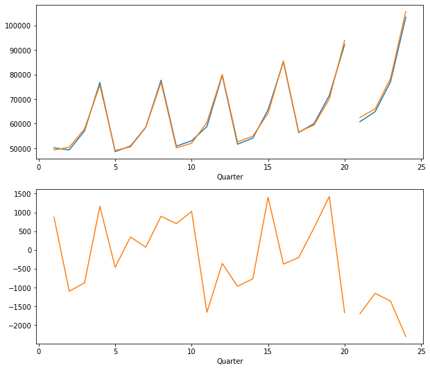
Problem 17.6: Souvenir Sales
The file SouvenirSales.csv contains monthly sales for a souvenir shop at a beach resort town in Queensland, Australia, between 1995–2001. (Source: Hyndman, R.J., Time Series Data Library, https://datamarket.com/data/list/?q=provider:tsdl. Accessed on 11/20/2018). The series is presented twice, in Australian dollars and in log-scale. Back in 2001, the store wanted to use the data to forecast sales for the next 12 months (year 2002). They hired an analyst to generate forecasts. The analyst first partitioned the data into training and validation sets, with the validation set containing the last 12 months of data (year 2001). She then fit a regression model to sales, using the training set.
df = pd.read_csv(DATA / 'SouvenirSales.csv')
df_ts = pd.Series(df['Sales'].values, index=pd.to_datetime(df.Date, format='%b-%y'), name='Sales')
fig, axes = plt.subplots(nrows=1, ncols=2, figsize=(10,4))
for ax in axes:
df_ts.plot(ax=ax, y=['Sales'], style='.-')
ax.set_xlabel('Time')
axes[1].set_yscale('log')
axes[0].set_ylabel('Sales (Australian $)')
axes[1].set_ylabel('Sales (log-scale)')
plt.tight_layout()
plt.show()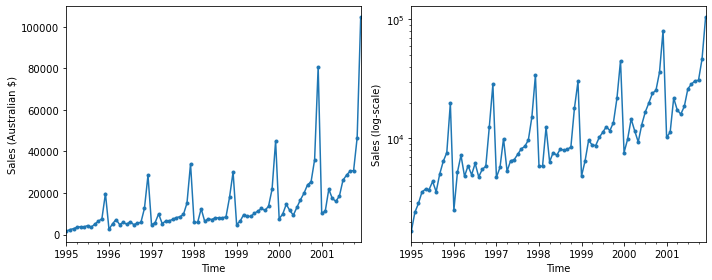
Solution 17.6.a
Based on the two time plots, which predictors should be included in the regression model? What is the total number of predictors in the model?
12 predictors - the monthly index variable (trend), plus 11 seasonal variables (one for each month minus 1 - including all 12 would lead to multicollinearity errors in the regression).
Solution 17.6.b
Run a regression model with Sales (in Australian dollars) as the outcome variable, and with a linear trend and monthly seasonality. Remember to fit only the training data. Call this model A.
df = tsatools.add_trend(df_ts, trend='ct')
df['month'] = df.index.month
train_df = df[:'2000-12-31']
valid_df = df['2001-01-01':]
modelA = sm.ols(formula='Sales ~ trend + C(month)', data=train_df).fit()Solution 17.6.b.i
Examine the estimated coefficients: which month tends to have the highest average sales during the year? Why is this reasonable?
print(modelA.summary()) OLS Regression Results
==============================================================================
Dep. Variable: Sales R-squared: 0.790
Model: OLS Adj. R-squared: 0.748
Method: Least Squares F-statistic: 18.53
Date: Sun, 08 Mar 2020 Prob (F-statistic): 9.44e-16
Time: 20:21:15 Log-Likelihood: -720.48
No. Observations: 72 AIC: 1467.
Df Residuals: 59 BIC: 1497.
Df Model: 12
Covariance Type: nonrobust
==================================================================================
coef std err t P>|t| [0.025 0.975]
----------------------------------------------------------------------------------
Intercept -3065.5544 2640.262 -1.161 0.250 -8348.706 2217.597
C(month)[T.2] 1119.3842 3422.055 0.327 0.745 -5728.132 7966.901
C(month)[T.3] 4408.8450 3422.564 1.288 0.203 -2439.690 1.13e+04
C(month)[T.4] 1462.5675 3423.413 0.427 0.671 -5387.665 8312.800
C(month)[T.5] 1446.1950 3424.600 0.422 0.674 -5406.414 8298.804
C(month)[T.6] 1867.9775 3426.126 0.545 0.588 -4987.685 8723.640
C(month)[T.7] 2988.5633 3427.990 0.872 0.387 -3870.830 9847.956
C(month)[T.8] 3227.5808 3430.192 0.941 0.351 -3636.218 1.01e+04
C(month)[T.9] 3955.5600 3432.731 1.152 0.254 -2913.320 1.08e+04
C(month)[T.10] 4821.6574 3435.606 1.403 0.166 -2052.975 1.17e+04
C(month)[T.11] 1.152e+04 3438.817 3.351 0.001 4643.581 1.84e+04
C(month)[T.12] 3.247e+04 3442.362 9.432 0.000 2.56e+04 3.94e+04
trend 245.3642 34.083 7.199 0.000 177.165 313.564
==============================================================================
Omnibus: 82.427 Durbin-Watson: 0.634
Prob(Omnibus): 0.000 Jarque-Bera (JB): 1266.965
Skew: 3.203 Prob(JB): 7.62e-276
Kurtosis: 22.526 Cond. No. 524.
==============================================================================
Warnings:
[1] Standard Errors assume that the covariance matrix of the errors is correctly specified.December - this is the holiday season (and the height of the summer in Australia).
Solution 17.6.b.ii
The estimated trend coefficient in model A is 245.36. What does this mean?
Seasonally adjusted sales increase by 240.1 Australian dollars per month
fig, axes = plt.subplots(nrows=1, ncols=2, figsize=(10,4))
for sub_df in (train_df, valid_df):
sub_df.Sales.plot(ax=axes[0], color='C0')
modelA.predict(sub_df).plot(ax=axes[0], color='C1')
resid = sub_df.Sales - modelA.predict(sub_df)
resid.plot(ax=axes[1], color='C1')
plt.show()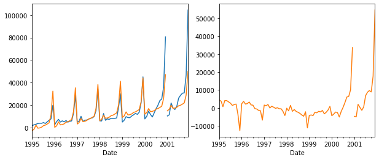
Solution 17.6.c
Run a regression model with an exponential trend and multiplicative seasonality. Remember to fit only the training data. Call this model B.
modelB = sm.ols(formula='np.log(Sales) ~ trend + C(month)', data=train_df).fit()
print(modelB.summary()) OLS Regression Results
==============================================================================
Dep. Variable: np.log(Sales) R-squared: 0.942
Model: OLS Adj. R-squared: 0.931
Method: Least Squares F-statistic: 80.40
Date: Sun, 08 Mar 2020 Prob (F-statistic): 6.21e-32
Time: 20:21:16 Log-Likelihood: 25.021
No. Observations: 72 AIC: -24.04
Df Residuals: 59 BIC: 5.554
Df Model: 12
Covariance Type: nonrobust
==================================================================================
coef std err t P>|t| [0.025 0.975]
----------------------------------------------------------------------------------
Intercept 7.6464 0.084 90.898 0.000 7.478 7.815
C(month)[T.2] 0.2820 0.109 2.587 0.012 0.064 0.500
C(month)[T.3] 0.6950 0.109 6.374 0.000 0.477 0.913
C(month)[T.4] 0.3739 0.109 3.428 0.001 0.156 0.592
C(month)[T.5] 0.4217 0.109 3.865 0.000 0.203 0.640
C(month)[T.6] 0.4470 0.109 4.095 0.000 0.229 0.665
C(month)[T.7] 0.5834 0.109 5.341 0.000 0.365 0.802
C(month)[T.8] 0.5469 0.109 5.004 0.000 0.328 0.766
C(month)[T.9] 0.6356 0.109 5.811 0.000 0.417 0.854
C(month)[T.10] 0.7295 0.109 6.664 0.000 0.510 0.949
C(month)[T.11] 1.2010 0.110 10.961 0.000 0.982 1.420
C(month)[T.12] 1.9522 0.110 17.800 0.000 1.733 2.172
trend 0.0211 0.001 19.449 0.000 0.019 0.023
==============================================================================
Omnibus: 0.280 Durbin-Watson: 1.036
Prob(Omnibus): 0.869 Jarque-Bera (JB): 0.465
Skew: -0.029 Prob(JB): 0.793
Kurtosis: 2.611 Cond. No. 524.
==============================================================================
Warnings:
[1] Standard Errors assume that the covariance matrix of the errors is correctly specified.Solution 17.6.c.i
Fitting a model to log(Sales) with a linear trend is equivalent to fitting a model to Sales (in dollars) with what type of trend?
Exponential trend
Solution 17.6.c.ii
The estimated trend coefficient in model B is 0.02. What does this mean?
Seasonally-adjusted sales increase by 2% per month on average.
Solution 17.6.c.iii
Use this model to forecast the sales in February 2002.
In order to predict February 2002, we need to rebuild a model with the full dataset
modelBfull = sm.ols(formula='np.log(Sales) ~ trend + C(month)', data=df).fit()
future_df = pd.DataFrame({
'const': [1.0, 1.0],
'trend': [85.0, 86.0],
'month': [1, 2],
}, index=['2002-01-01', '2002-02-01'])
np.exp(modelBfull.predict(future_df))2002-01-01 13484.062109
2002-02-01 17724.450248
dtype: float64Solution 17.6.d
Compare the two regression models (A and B) in terms of forecast performance. Which model is preferable for forecasting? Mention at least two reasons based on the information in the outputs.
regressionSummary(valid_df['Sales'], modelA.predict(valid_df))
regressionSummary(valid_df['Sales'], np.exp(modelB.predict(valid_df)))
Regression statistics
Mean Error (ME) : 8251.5127
Root Mean Squared Error (RMSE) : 17451.5469
Mean Absolute Error (MAE) : 10055.2761
Mean Percentage Error (MPE) : 10.5340
Mean Absolute Percentage Error (MAPE) : 26.6657
Regression statistics
Mean Error (ME) : 4824.4941
Root Mean Squared Error (RMSE) : 7101.4442
Mean Absolute Error (MAE) : 5191.6695
Mean Percentage Error (MPE) : 12.3594
Mean Absolute Percentage Error (MAPE) : 15.5191Fitting the natural log in model B damps the variability in the seasonal component so it is additive. It can now be modeled by dummy variables. Also the log makes the trend linear and suitable for linear regression. In model A we fit a linear trend to data that had a nonlinear trend.
Solution 17.6.e
Continuing with model B, create an ACF plot until lag 15 for the forecast errors. Now fit an AR model with lag 2 [ARIMA(2,0,0)] to the forecast errors.
ax = tsaplots.plot_acf(modelB.resid, lags=15)
plt.show()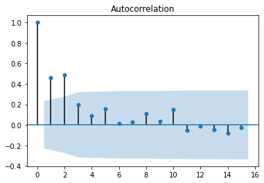
arimaB = ARIMA(modelBfull.resid, order=(2, 0, 0), freq='MS').fit(disp=0)
arimaB.summary()| Dep. Variable: | y | No. Observations: | 84 |
| Model: | ARMA(2, 0) | Log Likelihood | 46.278 |
| Method: | css-mle | S.D. of innovations | 0.139 |
| Date: | Sun, 08 Mar 2020 | AIC | -84.556 |
| Time: | 20:21:16 | BIC | -74.833 |
| Sample: | 01-01-1995 | HQIC | -80.647 |
| - 12-01-2001 |
| coef | std err | z | P>|z| | [0.025 | 0.975] | |
| const | -0.0026 | 0.044 | -0.058 | 0.954 | -0.089 | 0.084 |
| ar.L1.y | 0.3488 | 0.103 | 3.392 | 0.001 | 0.147 | 0.550 |
| ar.L2.y | 0.3182 | 0.103 | 3.089 | 0.002 | 0.116 | 0.520 |
| Real | Imaginary | Modulus | Frequency | |
| AR.1 | 1.3074 | +0.0000j | 1.3074 | 0.0000 |
| AR.2 | -2.4034 | +0.0000j | 2.4034 | 0.5000 |
Solution 17.6.e.i
Examining the ACF plot and the estimated coefficients of the AR(2) model (and their statistical significance), what can we learn about the forecasts that result from model B?
They should be adjusted to account for the autocorrelation at lags 1 and 2.
Solution 17.6.e.i
Use the autocorrelation information to compute an improved forecast for January 2002, using model B and the AR(2) model above.
forecast, _, conf_int = arimaB.forecast(1)
arimaCorrection = forecast[0]
arimaCorrection0.06501310628340459The untransformed prediction from modelBfull is
modelPrediction = modelBfull.predict(future_df)[0]
modelPrediction9.50926368247093We can combine the prediction and the correction
print('corrected prediction: ', modelPrediction + arimaCorrection)
print('predicted sales: ', np.exp(modelPrediction + arimaCorrection))corrected prediction: 9.574276788754334
predicted sales: 14389.827160919325Solution 17.6.f
How would you model these data differently if the goal was to understand the different components of sales in the souvenir shop between 1995–2001? Mention two differences.
No data partitioning. Evaluate model on the basis of data fit, not forecast error. Since Model B is the more accurate model we can go ahead and fit the model to all of the data, then generate the residuals for all the data, then fit an ARIMA model to the residuals which will then be used to adjust the forecast. We do not have a trend showing in the residuals since it has been taken out by the regression model. We have significant autocorrelation at lags 1 and 2, so we fit an ARIMA (2,0,0) to the residuals.
Problem 17.7: Shipments of Household Appliances
The time plot in the Figure shows the series of quarterly shipments (in million dollars) of US household appliances between 1985-1989 (data are available in ApplianceShipments.csv, data courtesy of Ken Black).
df = pd.read_csv(DATA / 'ApplianceShipments.csv')
# convert Quarter information into month-year
for q, m in ('Q1', '03'), ('Q2', '06'), ('Q3', '09'), ('Q4', '12'):
df['Quarter'] = df['Quarter'].str.replace(q, m)
df['Quarter'] = pd.to_datetime(df.Quarter, format='%m-%Y')
df_ts = pd.Series(df['Shipments'].values, index=df.Quarter, name='shipments')
ax = df_ts.plot(style='.-', figsize=(6,3))
ax.set_ylabel('Shipments (in 000$)')
ax.set_xlabel('Time')
plt.tight_layout()
plt.show()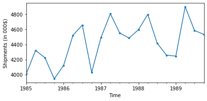
If we compute the autocorrelation of the series, which lag (> 0) is most likely to have the largest coefficient (in absolute value)? Create an ACF plot and compare with your answer.
tsaplots.plot_acf(df.Shipments)
plt.show()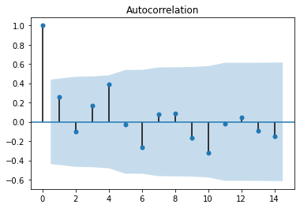
Our guess is that lag = 4 will have the greatest coefficient. Sales appear to be highly cyclical, meaning that the quarter most like the current quarter will be the year-ago quarter. This is confirmed by the ACF plot.
Problem 17.8: Australian Wine Sales
The Figure shows time plots of monthly sales of six types of Australian wines (red, rose, sweet white, dry white, sparkling, and fortified) for 1980–1994 (Data are available in AustralianWines.csv, source: Hyndman, R.J., Time Series Data Library, https://datamarket.com/data/list/?q=provider:tsdl. Accessed on 11/20/2018). The units are thousands of litres. You are hired to obtain short term forecasts (2-3 months ahead) for each of the six series, and this task will be repeated every month.
Note: This problem more properly pertains to chapter 18, where Holt-Winters is covered.
df = pd.read_csv(DATA / 'AustralianWines.csv', na_values=['*'])
df['Date'] = pd.to_datetime(df.Month, format='%b-%y')
df.head()| Month | Fortified | Red | Rose | sparkling | Sweet white | Dry white | Date | |
|---|---|---|---|---|---|---|---|---|
| 0 | Jan-80 | 2585 | 464 | 112.0 | 1686 | 85 | 1954 | 1980-01-01 |
| 1 | Feb-80 | 3368 | 675 | 118.0 | 1591 | 89 | 2302 | 1980-02-01 |
| 2 | Mar-80 | 3210 | 703 | 129.0 | 2304 | 109 | 3054 | 1980-03-01 |
| 3 | Apr-80 | 3111 | 887 | 99.0 | 1712 | 95 | 2414 | 1980-04-01 |
| 4 | May-80 | 3756 | 1139 | 116.0 | 1471 | 91 | 2226 | 1980-05-01 |
fig, axes = plt.subplots(nrows=3, ncols=2, figsize=(10,12))
params = [
{'ax': axes[0, 0], 'title': 'Sweet white', 'y': 'Sweet white'},
{'ax': axes[0, 1], 'title': 'Rose wine', 'y': 'Rose'},
{'ax': axes[1, 0], 'title': 'Sparkling wine', 'y': 'sparkling'},
{'ax': axes[1, 1], 'title': 'Red wine', 'y': 'Red'},
{'ax': axes[2, 0], 'title': 'Dry white wine', 'y': 'Dry white'},
{'ax': axes[2, 1], 'title': 'Fortified wine', 'y': 'Fortified'},
]
with warnings.catch_warnings():
warnings.simplefilter("ignore")
for param in params:
ax = df.plot(x='Date', **param)
ax.set_xlabel('')
ax.set_ylabel('Thousands of litres')
ax.get_legend().remove()
plt.tight_layout()
plt.show()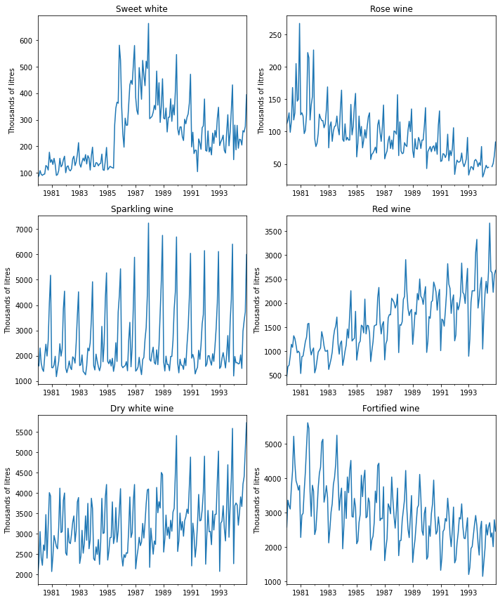
Solution 17.8.a
Which forecasting method would you choose if you had to choose the same method for all series? Why?
Model/Method: Holt-Winter’s exponential smoothing Reasons: 1. Ability of the model to capture both seasonality and trend that are present in the various data series. 2. Adaptability of the model - will adapt to the various patterns of different data series 3. Holt-Winter’s model is a reasonable model for all series - it will be able to capture and adjust to changing levels of trends and seasonality swings. It is parsimonious and should produce good fit as well as good forecasts
Solution 17.8.b
Fortified wine has the largest market share of the above six types of wine. You are asked to focus on fortified wine sales alone, and produce as accurate as possible forecasts for the next 2 months.
- Start by partitioning the data: use the period until December 1993 as the training set.
- Fit a regression model to sales with a linear trend and additive seasonality.
df = pd.read_csv(DATA / 'AustralianWines.csv', na_values=['*'])
df['Date'] = pd.to_datetime(df.Month, format='%b-%y')
df = tsatools.add_trend(pd.Series(df['Fortified'].values, index=df.Date, name='fortified'), trend='ct')
df['month'] = df.index.month
train_df = df[:'1993-12-31']
valid_df = df['1994-01-01':]
ax = train_df.plot(y=['fortified'])
valid_df.plot(y=['fortified'], ax=ax)
plt.show()
# df.head()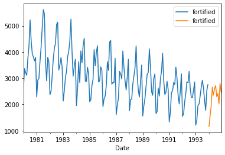
model = sm.ols(formula='fortified ~ trend + C(month)', data=train_df).fit()
print(model.summary()) OLS Regression Results
==============================================================================
Dep. Variable: fortified R-squared: 0.891
Model: OLS Adj. R-squared: 0.883
Method: Least Squares F-statistic: 105.6
Date: Sun, 08 Mar 2020 Prob (F-statistic): 4.09e-68
Time: 20:21:18 Log-Likelihood: -1188.7
No. Observations: 168 AIC: 2403.
Df Residuals: 155 BIC: 2444.
Df Model: 12
Covariance Type: nonrobust
==================================================================================
coef std err t P>|t| [0.025 0.975]
----------------------------------------------------------------------------------
Intercept 2679.6545 88.043 30.436 0.000 2505.735 2853.574
C(month)[T.2] 361.1331 112.625 3.207 0.002 138.656 583.611
C(month)[T.3] 791.9804 112.628 7.032 0.000 569.497 1014.464
C(month)[T.4] 1048.3992 112.633 9.308 0.000 825.906 1270.893
C(month)[T.5] 1619.3894 112.640 14.377 0.000 1396.882 1841.897
C(month)[T.6] 1691.2367 112.649 15.013 0.000 1468.712 1913.762
C(month)[T.7] 2410.0126 112.660 21.392 0.000 2187.466 2632.559
C(month)[T.8] 2116.2171 112.673 18.782 0.000 1893.645 2338.790
C(month)[T.9] 1115.7073 112.688 9.901 0.000 893.105 1338.310
C(month)[T.10] 922.1975 112.705 8.182 0.000 699.562 1144.833
C(month)[T.11] 1373.6163 112.724 12.186 0.000 1150.943 1596.290
C(month)[T.12] 1583.1779 112.745 14.042 0.000 1360.463 1805.893
trend -10.4188 0.475 -21.923 0.000 -11.358 -9.480
==============================================================================
Omnibus: 9.128 Durbin-Watson: 1.677
Prob(Omnibus): 0.010 Jarque-Bera (JB): 9.178
Skew: 0.494 Prob(JB): 0.0102
Kurtosis: 3.578 Cond. No. 1.21e+03
==============================================================================
Warnings:
[1] Standard Errors assume that the covariance matrix of the errors is correctly specified.
[2] The condition number is large, 1.21e+03. This might indicate that there are
strong multicollinearity or other numerical problems.Solution 17.8.b.i
Create the ‘actual vs. forecast’ plot. What can you say about the model fit?
# train_df = df[:'1993-12-31']
# valid_df = df['1994-01-01':]
ax = train_df.plot(y=['fortified'], color='C0')
valid_df.plot(y=['fortified'], ax=ax, color='C0', linestyle='dashed')
model.predict(train_df).plot(y=['fortified'], ax=ax, color='C1')
model.predict(valid_df).plot(y=['fortified'], ax=ax, color='C1', linestyle='dashed')
plt.show()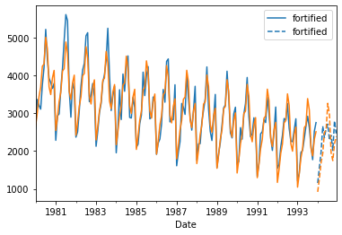
Solution 17.8.b.ii
Use the regression model to forecast sales in January and February 1994.
model.predict(valid_df)[:2]Date
1994-01-01 918.881868
1994-02-01 1269.596154
dtype: float64Solution 17.8.c
Create an ACF plot for the residuals from the above model until lag 12.
tsaplots.plot_acf(model.resid, lags=12)
plt.show()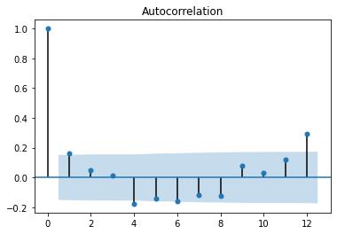
Examining this plot (only), which of the following statements are reasonable conclusions?
Decembers (month 12) are not captured well by the model.
There is a strong correlation between sales on the same calendar month.
The model does not capture the seasonality well.
We should try to fit an autoregressive model with lag 12 to the residuals.
Decembers (month 12) are not captured well by the model - NO (don’t forget, the “12” in the ACF plot refers to lag of 12 months, not to December!)
There is a strong correlation between sales on the same calendar month - YES (this is what the high coefficient for lag 12 means
The model does not capture the seasonality well - YES (this follows from the above)
We should try to fit an autoregressive model with lag 12 to the residuals - YES